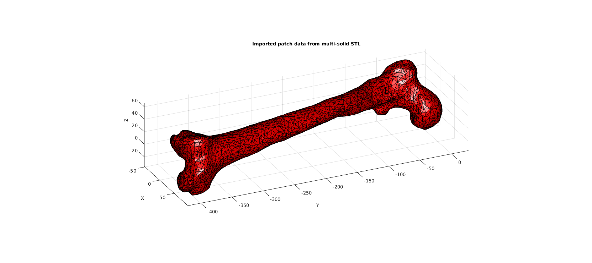
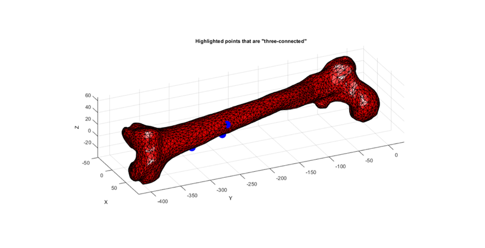
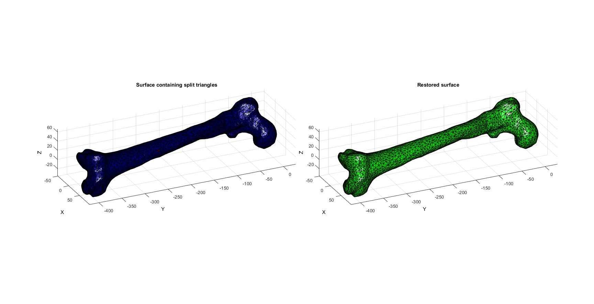
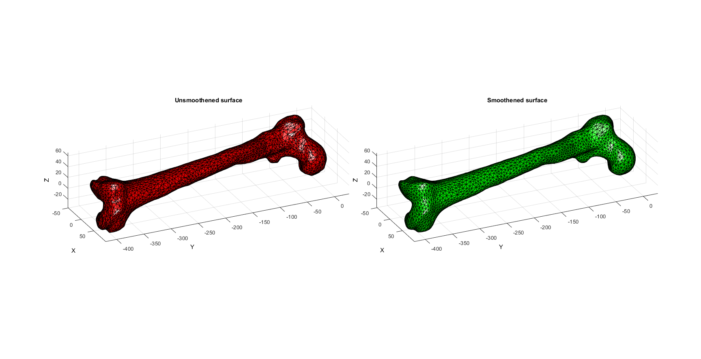
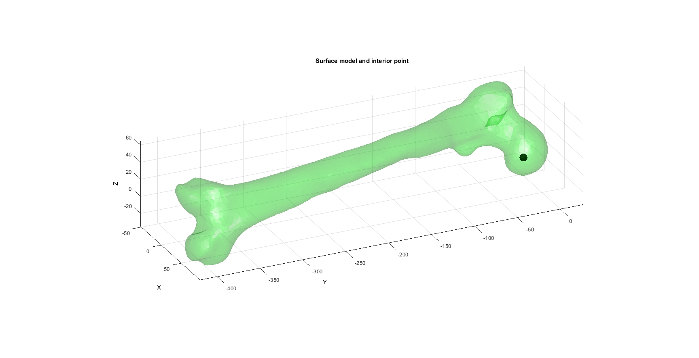
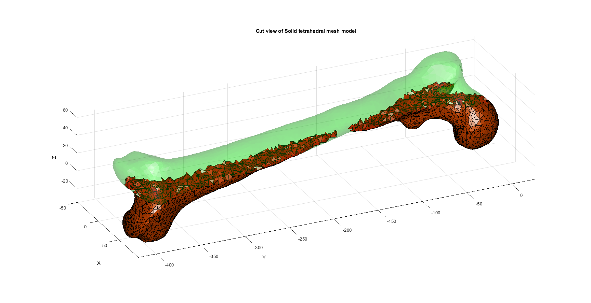
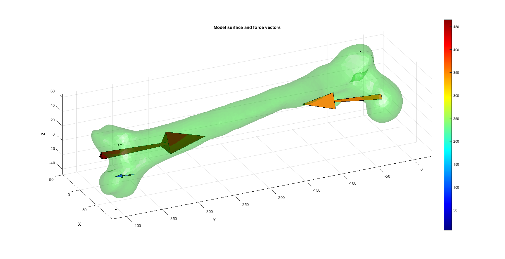
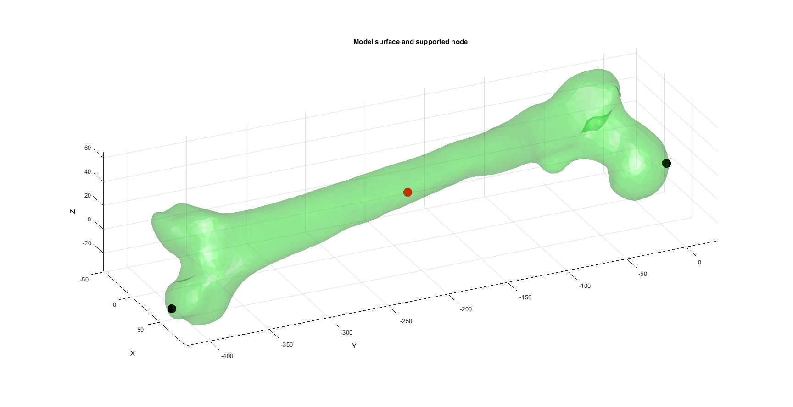

DEMO_AnyBody_force_analysis
Below is a demonstration for importing AnyBody surface models and analysis results using the import_STL_txt and importAnyBodyOutput functions respectively. The analysis results includes loads which can be used for finite element analysis. The surface model is meshed using Tetgen and used to formulate an FEBio model with AnyBody derived boundary conditions.
Contents
- Importing STL surface triangulation
- Visualizing imported surface mesh
- Merging nodes
- Search for "three-connected" points
- Removing "3-connected" vertices in the middle of faces and replacing associated faces by a single face
- Surface smoothening
- Mesh using TetGen
- MESH MODEL USING TETGEN
- Import force data
- Snap force vector origins to nodes (inaccurate but used anyway for example)
- CONSTRUCTING FEB MODEL
- SAVING .FEB FILE
- RUNNING FEBIO JOB
N.B. This example shows the pipeline for importing AnyBody metrics and for meshing and FEBio model construction. The actual analysis performed is INACCURATE at present. However the various steps highlighted do illustrate the entire modelling proces. This example will be updated in the future to demonstrate a more realistic analysis. 2014/10/09
close all; clc; %clear;
Plot settings
fontSize=10; faceColor1='r'; faceColor2='g'; faceAlpha1=1; faceAlpha2=0.25; edgeColor=0*ones(1,3); edgeWidth=0.5; markerSize=50; viewAz=65; vieEl=25; cMap=jet(250);
path names
filePath=mfilename('fullpath'); savePath=fullfile(fileparts(filePath),'data','temp'); modelName=fullfile(savePath,'tempModel');
Importing STL surface triangulation
% Set folder and file name defaultFolder = fileparts(mfilename('fullpath')); pathName=fullfile(defaultFolder,'data','STL'); fileName=fullfile(pathName,'femur.stl'); % Import STL [stlStruct] = import_STL_txt(fileName);
Visualizing imported surface mesh
Plotting the model
cFigure; title('Imported patch data from multi-solid STL','fontSize',fontSize); xlabel('X','fontSize',fontSize);ylabel('Y','fontSize',fontSize); zlabel('Z','fontSize',fontSize); hold on; for q=1:1:numel(stlStruct.solidNames) F=stlStruct.solidFaces{q}; V=stlStruct.solidVertices{q}; V=V*1000; % Convert to mm for this particular surface patch('Faces',F,'Vertices',V,'FaceColor',faceColor1,'EdgeColor','k','FaceAlpha',faceAlpha1); end view(3); axis equal; axis tight; axis vis3d; grid on; view(viewAz,vieEl); camlight('headlight'); lighting phong; drawnow;
Merging nodes
STL imported surfaces suffer from non-unique points since each face is defined with its own coordinate set, even if it shares nodes with an adjacent face. Hence in order to generate a closed surface these nodes need to be merged. Here the unique function is used combined with pround to achieve this. So effectively points are deemed the same if they are the same after rounding to the 5th decimal place.
[~,ind1,ind2]=unique(pround(V,5),'rows');
V=V(ind1,:);
F=ind2(F);
Search for "three-connected" points
A common issue in triangulated surfaces are "three-connected" nodes. These may be undesirable and can easily be identified and removed.
[N]=numConnect(F,V); logicThree=N==3;
Plotting three connected points (some may be boundary points)
cFigure; title('Highlighted points that are "three-connected"','fontSize',fontSize); xlabel('X','fontSize',fontSize);ylabel('Y','fontSize',fontSize); zlabel('Z','fontSize',fontSize); hold on; patch('Faces',F,'Vertices',V,'FaceColor',faceColor1,'EdgeColor','k','FaceAlpha',faceAlpha1); plotV(V(logicThree,:),'b.','MarkerSize',markerSize); view(3); axis equal; axis tight; axis vis3d; grid on; view(viewAz,vieEl); camlight('headlight'); lighting flat; drawnow;
Removing "3-connected" vertices in the middle of faces and replacing associated faces by a single face
In a surface triangulation "3-connected" locations often contain poor quality triangles of a locally smaller area then the rest of the surface. Smoothening does not resolve this issue since the quality is not great improved even after vertex is at the centre of its neighbouring nodes. Hence the function triSurfRemoveThreeConnect instead removes the central nodes and groups the affected triangles into a single triangle.
[Ft,Vt,~,L]=triSurfRemoveThreeConnect(F,V,[]); C=double(L);
Plotting results
hf=cFigure; hold on; subplot(1,2,1); title('Surface containing split triangles','FontSize',fontSize); xlabel('X','FontSize',fontSize); ylabel('Y','FontSize',fontSize); zlabel('Z','FontSize',fontSize); hp=patch('Faces',F,'Vertices',V,'FaceColor','flat','CData',C,'FaceAlpha',faceAlpha1,'lineWidth',edgeWidth,'edgeColor',edgeColor); set(gca,'FontSize',fontSize); view(3); axis tight; axis equal; axis vis3d; grid on; view(viewAz,vieEl); colormap(cMap); camlight('headlight'); lighting flat; subplot(1,2,2); title('Restored surface','FontSize',fontSize); xlabel('X','FontSize',fontSize); ylabel('Y','FontSize',fontSize); zlabel('Z','FontSize',fontSize); hp=patch('Faces',Ft,'Vertices',Vt,'FaceColor',faceColor2,'FaceAlpha',faceAlpha1,'lineWidth',edgeWidth,'edgeColor',edgeColor); % [hp]=patchNormPlot(Ft,Vt,0.25); set(gca,'FontSize',fontSize); view(3); axis tight; axis equal; axis vis3d; grid on; view(viewAz,vieEl); camlight('headlight'); lighting flat; drawnow;
Surface smoothening
cPar.n=25;
cPar.Method='HC';
[Vt]=patchSmooth(Ft,Vt,[],cPar);
Plotting smoothing results
hf=cFigure; hold on; subplot(1,2,1); title('Unsmoothened surface','FontSize',fontSize); xlabel('X','FontSize',fontSize); ylabel('Y','FontSize',fontSize); zlabel('Z','FontSize',fontSize); hp=patch('Faces',F,'Vertices',V,'FaceColor',faceColor1,'FaceAlpha',faceAlpha1,'lineWidth',edgeWidth,'edgeColor',edgeColor); set(gca,'FontSize',fontSize); view(3); axis tight; axis equal; axis vis3d; grid on; view(viewAz,vieEl); camlight('headlight'); lighting flat; subplot(1,2,2); title('Smoothened surface','FontSize',fontSize); xlabel('X','FontSize',fontSize); ylabel('Y','FontSize',fontSize); zlabel('Z','FontSize',fontSize); hp=patch('Faces',Ft,'Vertices',Vt,'FaceColor',faceColor2,'FaceAlpha',faceAlpha1,'lineWidth',edgeWidth,'edgeColor',edgeColor); set(gca,'FontSize',fontSize); view(3); axis tight; axis equal; axis vis3d; grid on; view(viewAz,vieEl); camlight('headlight'); lighting flat; drawnow;
Mesh using TetGen
%Find interior point searchRadius=5; voxelSize=3; [V_in_1]=getInnerPoint(Ft,Vt,searchRadius,voxelSize,0); hf=cFigure; hold on; title('Surface model and interior point','FontSize',fontSize); xlabel('X','FontSize',fontSize); ylabel('Y','FontSize',fontSize); zlabel('Z','FontSize',fontSize); hp=patch('Faces',Ft,'Vertices',Vt,'FaceColor',faceColor2,'FaceAlpha',faceAlpha2,'edgeColor','none'); plotV(V_in_1,'k.','MarkerSize',markerSize); set(gca,'FontSize',fontSize); view(3); axis tight; axis equal; axis vis3d; grid on; view(viewAz,vieEl); camlight('headlight'); lighting flat; drawnow;
%Face boundary markers faceBoundaryMarker=ones(size(Ft,1),1); regionA=tetVolMeanEst(Ft,Vt); regionA=regionA*6; stringOpt='-pq1VAaY'; smeshName=['anyBody_FEMUR','.smesh']; smeshStruct.stringOpt=stringOpt; smeshStruct.Faces=Ft; smeshStruct.Nodes=Vt; smeshStruct.holePoints=[]; smeshStruct.faceBoundaryMarker=faceBoundaryMarker; %Face boundary markers smeshStruct.regionPoints=V_in_1; %region points smeshStruct.regionA=regionA; smeshStruct.minRegionMarker=2; %Minimum region marker smeshStruct.smeshName=smeshName;
MESH MODEL USING TETGEN
[meshOutput]=runTetGenSmesh(smeshStruct); runTetView(meshOutput.loadNameStruct.loadName_ele);
Warning: runTetGenSmesh has been renamed to runTetGen. runTetGenSmesh will be
removed in future releases.
%%%%%%%%%%%%%%%%%%%%%%%%%%%%%%%%%%%%%%%%%%%%%
--- TETGEN Tetrahedral meshing --- 12-Sep-2016 10:12:38
Warning: smeshStruct.smeshName input will be replaced by smeshStruct.modelName
in future releases!
%%%%%%%%%%%%%%%%%%%%%%%%%%%%%%%%%%%%%%%%%%%%%
--- Writing SMESH file --- 12-Sep-2016 10:12:38
Warning: smeshStruct.smeshName input will be replaced by smeshStruct.modelName
in future releases!
----> Adding node field
----> Adding facet field
----> Adding holes specification
----> Adding region specification
--- Done --- 12-Sep-2016 10:12:38
--- Running TetGen to mesh input boundary--- 12-Sep-2016 10:12:38
Opening D:\MATLAB\SVN\GIBBON\lib_ext\tetGen\tempFiles\anyBody_FEMUR.smesh.
Initializing memorypools.
tetrahedron per block: 8188.
Size of a point: 128 bytes.
Size of a tetrahedron: 112 (112) bytes.
Size of a shellface: 192 (192) bytes.
Initializing robust predicates.
sizeof(double) = 8
machine epsilon = 2.22045e-016 [IEEE 754 64-bit macheps]
Delaunizing vertices...
Permuting vertices.
Sorting vertices.
Incrementally inserting vertices.
Delaunay seconds: 0.015
Point sorting seconds: 0
Creating surface mesh ...
5916 (8874) subfaces (segments).
Surface mesh seconds: 0.005
Recovering boundaries...
Recovering segments.
8874 (0) segments are recovered (missing).
Recovering facets.
5916 (0) subfaces are recovered (missing).
Boundary recovery seconds: 0.006
Segment recovery seconds: 0.004
Facet recovery seconds: 0.002
Removing exterior tetrahedra ...
Spreading region attributes.
Found 1 domain.
Exterior tets removal seconds: 0.007
Recovering Delaunayness...
Initial obj = 1144577110755.3479
Final obj = 1144577101956.8596
Delaunay recovery seconds: 0.003
Refining mesh...
Min radiu-edge ratio = 1.
Min dihedral angle = 0.
Splitting bad quality tets.
Added 5765 (0,0,5765) Steiner points.
Performed 2 flips.
Refinement seconds: 0.132
Optimizing mesh...
Optimization level = 2.
Optimization scheme = 7.
Number of iteration = 3.
Min_Max dihed angle = 165.
Removed 558 edges.
Optimization seconds: 0.016
Writing D:\MATLAB\SVN\GIBBON\lib_ext\tetGen\tempFiles\anyBody_FEMUR.1.node.
Writing D:\MATLAB\SVN\GIBBON\lib_ext\tetGen\tempFiles\anyBody_FEMUR.1.ele.
Writing D:\MATLAB\SVN\GIBBON\lib_ext\tetGen\tempFiles\anyBody_FEMUR.1.face.
Writing D:\MATLAB\SVN\GIBBON\lib_ext\tetGen\tempFiles\anyBody_FEMUR.1.edge.
Output seconds: 0.091
Total running seconds: 0.276
Statistics:
Input points: 2960
Input facets: 5916
Input segments: 8874
Input holes: 0
Input regions: 1
Mesh points: 8725
Mesh tetrahedra: 44809
Mesh faces: 92576
Mesh faces on exterior boundary: 5916
Mesh faces on input facets: 5916
Mesh edges on input segments: 8874
Steiner points inside domain: 5765
Mesh quality statistics:
Smallest volume: 0.72062 | Largest volume: 89.37
Shortest edge: 1.9158 | Longest edge: 11.878
Smallest asp.ratio: 1.2386 | Largest asp.ratio: 17.937
Smallest facangle: 11.701 | Largest facangle: 154.2220
Smallest dihedral: 5.7235 | Largest dihedral: 172.3646
Aspect ratio histogram:
< 1.5 : 1197 | 6 - 10 : 645
1.5 - 2 : 15650 | 10 - 15 : 41
2 - 2.5 : 16692 | 15 - 25 : 5
2.5 - 3 : 6230 | 25 - 50 : 0
3 - 4 : 2997 | 50 - 100 : 0
4 - 6 : 1352 | 100 - : 0
(A tetrahedron's aspect ratio is its longest edge length divided by its
smallest side height)
Face angle histogram:
0 - 10 degrees: 0 | 90 - 100 degrees: 9964
10 - 20 degrees: 17 | 100 - 110 degrees: 3421
20 - 30 degrees: 1236 | 110 - 120 degrees: 625
30 - 40 degrees: 24445 | 120 - 130 degrees: 80
40 - 50 degrees: 58962 | 130 - 140 degrees: 15
50 - 60 degrees: 65267 | 140 - 150 degrees: 2
60 - 70 degrees: 57846 | 150 - 160 degrees: 1
70 - 80 degrees: 34511 | 160 - 170 degrees: 0
80 - 90 degrees: 21336 | 170 - 180 degrees: 0
Dihedral angle histogram:
0 - 5 degrees: 0 | 80 - 110 degrees: 59006
5 - 10 degrees: 125 | 110 - 120 degrees: 8350
10 - 20 degrees: 3664 | 120 - 130 degrees: 4973
20 - 30 degrees: 6987 | 130 - 140 degrees: 3275
30 - 40 degrees: 15602 | 140 - 150 degrees: 1996
40 - 50 degrees: 32655 | 150 - 160 degrees: 1477
50 - 60 degrees: 47035 | 160 - 170 degrees: 541
60 - 70 degrees: 47629 | 170 - 175 degrees: 1
70 - 80 degrees: 35538 | 175 - 180 degrees: 0
Minimum input dihedral angle is 130.66 (degree).
Memory usage statistics:
Maximum number of tetrahedra: 51254
Maximum number of tet blocks (blocksize = 8188): 7
Approximate memory for tetrahedral mesh (bytes): 11,400,736
Approximate memory for extra pointers (bytes): 1,715,408
Approximate memory for algorithms (bytes): 3,483,728
Approximate memory for working arrays (bytes): 1,371,088
Approximate total used memory (bytes): 17,970,960
--- Done --- 12-Sep-2016 10:12:40
%%%%%%%%%%%%%%%%%%%%%%%%%%%%%%%%%%%%%%%%%%%%%
--- Importing TetGen files --- 12-Sep-2016 10:12:40
--- Done --- 12-Sep-2016 10:12:40
Access model element and patch data
F=meshOutput.faces; V=meshOutput.nodes; C=meshOutput.faceMaterialID; E=meshOutput.elements; elementMaterialIndices=ones(size(E,1),1); Fb=meshOutput.facesBoundary;
Show model
%Selecting half of the model to see interior Z=V(:,3); ZE=mean(Z(E),2); logicCut=ZE<mean(Z); [Fs,Cs]=element2patch(E(logicCut,:),C(logicCut)); hf1=cFigure; title('Cut view of Solid tetrahedral mesh model','FontSize',fontSize); xlabel('X','FontSize',fontSize); ylabel('Y','FontSize',fontSize); zlabel('Z','FontSize',fontSize); hold on; patch('Faces',Fs,'Vertices',V,'FaceColor',faceColor1,'lineWidth',edgeWidth,'edgeColor',edgeColor); patch('Faces',Fb,'Vertices',V,'FaceColor',faceColor2,'FaceAlpha',faceAlpha2,'edgeColor','none'); view(3); axis tight; axis equal; grid on; view(viewAz,vieEl); colormap(cMap); camlight('headlight'); lighting flat; set(gca,'FontSize',fontSize); drawnow;
tet4 elements assumed, for other elements please specify elementType
Import force data
pathName_TXT=fullfile(defaultFolder,'data','AnyBody'); fileName=fullfile(pathName_TXT,'femurData.txt'); structOut = importAnyBodyOutput(fileName); F_vec=structOut(1).F; %Force vectors Fm=sqrt(sum(F_vec.^2,2)); V_vec=structOut(1).Pos; %Position vectors V_vec=V_vec*1000; %Conver to meters logicRelevant=Fm>(max(Fm)/100); %Make a selection of higher forces for now a=150*[min(Fm(logicRelevant)) max(Fm(logicRelevant))]./max(Fm(logicRelevant)); %Arrow length scaling to magnitude range [Ff,Vf,Cf]=quiver3Dpatch(V_vec(logicRelevant,1),V_vec(logicRelevant,2),V_vec(logicRelevant,3),F_vec(logicRelevant,1),F_vec(logicRelevant,2),F_vec(logicRelevant,3),Fm(logicRelevant),a); hf1=cFigure; title('Model surface and force vectors','FontSize',fontSize); xlabel('X','FontSize',fontSize); ylabel('Y','FontSize',fontSize); zlabel('Z','FontSize',fontSize); hold on; patch('Faces',Ft,'Vertices',Vt,'FaceColor',faceColor2,'FaceAlpha',faceAlpha2,'edgeColor','none'); patch('Faces',Ff,'Vertices',Vf,'EdgeColor','k', 'CData',Cf,'FaceColor','flat','FaceAlpha',1); colormap(cMap); colorbar; view(3); axis tight; axis equal; grid on; view(viewAz,vieEl); camlight('headlight'); lighting flat; set(gca,'FontSize',fontSize); drawnow;
Snap force vector origins to nodes (inaccurate but used anyway for example)
[~,bcPrescribeList]=minDist(V_vec,V); bcPrescribeList=bcPrescribeList(logicRelevant); bcPrescribeMagnitudes=F_vec(logicRelevant,:);
% % Bottom boundary region % indBoundary=unique(Fb(:)); % minY=min(V(:,2)); % maxY=max(V(:,2)); % w=maxY-minY; % bcRigidList=indBoundary(V(indBoundary,2)<(minY+w/30)); % %Central node Vm=mean(V,1); % [~,bcRigidList]=minDist(Vm,V); %Top and bottom [~,bcRigidList1]=max(V(:,2)); [~,bcRigidList2]=min(V(:,2)); bcRigidList=[bcRigidList1; bcRigidList2]; hf1=cFigure; title('Model surface and supported node','FontSize',fontSize); xlabel('X','FontSize',fontSize); ylabel('Y','FontSize',fontSize); zlabel('Z','FontSize',fontSize); hold on; patch('Faces',Ft,'Vertices',Vt,'FaceColor',faceColor2,'FaceAlpha',faceAlpha2,'edgeColor','none'); plotV(V(bcRigidList,:),'k.','MarkerSize',markerSize); plotV(Vm,'r.','MarkerSize',markerSize); view(3); axis tight; axis equal; grid on; view(viewAz,vieEl); camlight('headlight'); lighting flat; set(gca,'FontSize',fontSize); drawnow;
CONSTRUCTING FEB MODEL
FEB_struct.febio_spec.version='2.0'; FEB_struct.Module.Type='solid'; % Defining file names FEB_struct.run_filename=[modelName,'.feb']; %FEB file name FEB_struct.run_logname=[modelName,'.txt']; %FEBio log file name %Geometry section FEB_struct.Geometry.Nodes=V; FEB_struct.Geometry.Elements={E}; %The element sets FEB_struct.Geometry.ElementType={'tet4'}; %The element types FEB_struct.Geometry.ElementMat={elementMaterialIndices}; FEB_struct.Geometry.ElementsPartName={'Femur'}; %Material section c1=1e25; %Very high for now k=1e2*c1; FEB_struct.Materials{1}.Type='Mooney-Rivlin'; FEB_struct.Materials{1}.Properties={'c1','c2','k'}; FEB_struct.Materials{1}.Values={c1,0,k}; %Step specific control sections FEB_struct.Control.AnalysisType='static'; FEB_struct.Control.Properties={'time_steps','step_size',... 'max_refs','max_ups',... 'dtol','etol','rtol','lstol'}; n_steps=50; time_step=1/n_steps; FEB_struct.Control.Values={n_steps,time_step,... 25,10,... 0.001,0.01,0,0.9}; FEB_struct.Control.TimeStepperProperties={'dtmin','dtmax','max_retries','opt_iter','aggressiveness'}; FEB_struct.Control.TimeStepperValues={time_step/1000,time_step, 5, 10, 1}; %Defining node sets FEB_struct.Geometry.NodeSet{1}.Set=bcRigidList; FEB_struct.Geometry.NodeSet{1}.Name='bcRigidList'; FEB_struct.Geometry.NodeSet{2}.Set=bcPrescribeList; FEB_struct.Geometry.NodeSet{2}.Name='bcPrescribeList'; %Adding BC information FEB_struct.Boundary.Fix{1}.bc='x'; FEB_struct.Boundary.Fix{1}.SetName=FEB_struct.Geometry.NodeSet{1}.Name; FEB_struct.Boundary.Fix{2}.bc='y'; FEB_struct.Boundary.Fix{2}.SetName=FEB_struct.Geometry.NodeSet{1}.Name; FEB_struct.Boundary.Fix{3}.bc='z'; FEB_struct.Boundary.Fix{3}.SetName=FEB_struct.Geometry.NodeSet{1}.Name; FEB_struct.Boundary.Fix{4}.bc='u'; FEB_struct.Boundary.Fix{4}.SetName=FEB_struct.Geometry.NodeSet{1}.Name; FEB_struct.Boundary.Fix{5}.bc='v'; FEB_struct.Boundary.Fix{5}.SetName=FEB_struct.Geometry.NodeSet{1}.Name; FEB_struct.Boundary.Fix{6}.bc='w'; FEB_struct.Boundary.Fix{6}.SetName=FEB_struct.Geometry.NodeSet{1}.Name; %Adding load information FEB_struct.Loads.Nodal_load{1}.bc='x'; FEB_struct.Loads.Nodal_load{1}.lc=1; % FEB_struct.Loads.Nodal_load{1}.SetName=FEB_struct.Geometry.NodeSet{2}.Name; FEB_struct.Loads.Nodal_load{1}.Set=bcPrescribeList; FEB_struct.Loads.Nodal_load{1}.nodeScale=bcPrescribeMagnitudes(:,1); FEB_struct.Loads.Nodal_load{2}.bc='y'; FEB_struct.Loads.Nodal_load{2}.lc=1; % FEB_struct.Loads.Nodal_load{2}.SetName=FEB_struct.Geometry.NodeSet{2}.Name; FEB_struct.Loads.Nodal_load{2}.Set=bcPrescribeList; FEB_struct.Loads.Nodal_load{2}.nodeScale=bcPrescribeMagnitudes(:,2); FEB_struct.Loads.Nodal_load{3}.bc='z'; FEB_struct.Loads.Nodal_load{3}.lc=1; % FEB_struct.Loads.Nodal_load{3}.SetName=FEB_struct.Geometry.NodeSet{1}.Name; FEB_struct.Loads.Nodal_load{3}.Set=bcPrescribeList; FEB_struct.Loads.Nodal_load{3}.nodeScale=bcPrescribeMagnitudes(:,3); %Load curves FEB_struct.LoadData.LoadCurves.id=1; FEB_struct.LoadData.LoadCurves.type={'linear'}; FEB_struct.LoadData.LoadCurves.loadPoints={[0 0;1 1;]}; %Adding output requests FEB_struct.Output.VarTypes={'displacement','stress','relative volume'}; %Specify log file output run_node_output_name=[FEB_struct.run_filename(1:end-4),'_node_out.txt']; FEB_struct.run_output_names={run_node_output_name}; FEB_struct.output_types={'node_data'}; FEB_struct.data_types={'ux;uy;uz'};
SAVING .FEB FILE
FEB_struct.disp_opt=0; %Display waitbars
febStruct2febFile(FEB_struct);
%%%%%%%%%%%%%%%%%%%%%%%%%%%%%%%%%%%%%%%%%%%%% --- Writing FEBio XML object --- 12-Sep-2016 10:12:43 Adding Module level Adding Control level Adding Globals level Adding Material level Adding Geometry level ----> Adding node field ----> Adding element field ----> Adding tet4 element entries.... ----> Adding NodeSet field Adding Boundary level ----> Defining fix type boundary conditions Adding Loads level ----> Defining node loads ----> Adding nodal loads ----> Adding nodal loads ----> Adding nodal loads Adding LoadData level ----> Defining load curves Adding Output level ----> Adding plotfile field ----> Adding logfile field Warning: Provided path of logfile is replaced by .feb file path. Only provide filename to avoid this warning Writing .feb file --- Done --- 12-Sep-2016 10:12:46
RUNNING FEBIO JOB
FEBioRunStruct.run_filename=FEB_struct.run_filename; FEBioRunStruct.run_logname=FEB_struct.run_logname; FEBioRunStruct.disp_on=1; FEBioRunStruct.disp_log_on=1; FEBioRunStruct.runMode='external';%'internal'; FEBioRunStruct.t_check=0.25; %Time for checking log file (dont set too small) FEBioRunStruct.maxtpi=1e99; %Max analysis time FEBioRunStruct.maxLogCheckTime=3; %Max log file checking time % [runFlag]=runMonitorFEBio(FEBioRunStruct);%START FEBio NOW!!!!!!!!
if runFlag==1 %i.e. a succesful run %% IMPORTING NODAL DISPLACEMENT RESULTS % Importing nodal displacements from a log file [~, N_disp_mat,~]=importFEBio_logfile(FEB_struct.run_output_names{1}); %Nodal displacements
DN=N_disp_mat(:,2:end,end); %Final nodal displacements
%% CREATING NODE SET IN DEFORMED STATE V_def=V+DN; DN_magnitude=sqrt(sum(DN.^2,2));
%% % Plotting the deformed model
[CF]=vertexToFaceMeasure(Fb,DN_magnitude);
hf1=figuremax(figColor,figColorDef);
title('The deformed model','FontSize',fontSize);
xlabel('X','FontSize',fontSize); ylabel('Y','FontSize',fontSize); zlabel('Z','FontSize',fontSize); hold on; hps=patch('Faces',Fb,'Vertices',V_def,'FaceColor','flat','CData',CF);view(3); axis tight; axis equal; grid on; colormap jet; colorbar; % camlight headlight; set(gca,'FontSize',fontSize); drawnow; end

GIBBON www.gibboncode.org
Kevin Mattheus Moerman, gibbon.toolbox@gmail.com